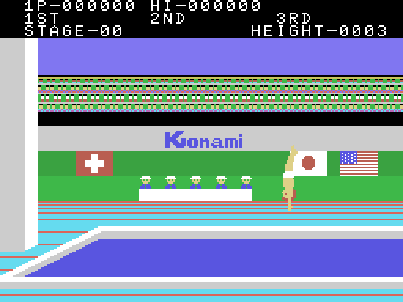
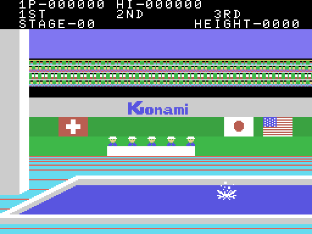
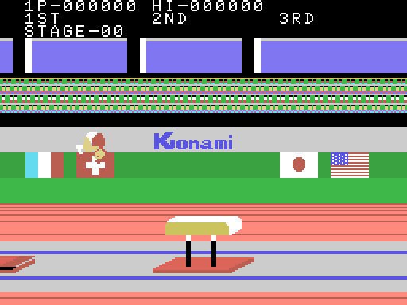
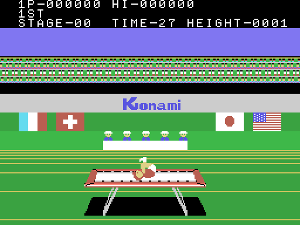
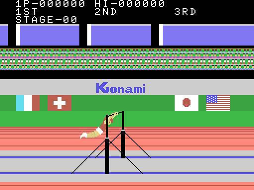

Hyper Sports 1 es la mitad de gimnasia y saltos de Hyper Sports de Konami, convertida al MSX. Tiene cuatro pruebas, y el orden en que se juegan lo dice la tabla de cuatro punteros de 0x6F00, que 0x6E38 indexa con 0xE052 y 3:
0xE052 y 3 | prueba | guión del rótulo |
|---|---|---|
| 0 | DIVING (salto de palanca) | 0x6F08 |
| 1 | LONG HORSE (el potro) | 0x6F1E |
| 2 | TRAMPOLINE (la cama elástica) | 0x6F11 |
| 3 | HORIZONTAL BAR (la barra fija) | 0x6F2B |
Los textos, en cambio, están guardados seguidos desde 0x6F08 en otro orden: DIVING, TRAMPOLINE, LONG HORSE, HORIZONTAL BAR. Quien lea los textos en vez de la tabla se lleva la segunda y la tercera cambiadas.
0xE052 no se reinicia entre vueltas: sigue subiendo, y la prueba sale de sus dos bits bajos, así que la quinta vuelve a ser DIVING con el STAGE subido.
Estas cinco imágenes no son capturas. Los dibujos —patrones y colores— salen de la ROM, descomprimidos con el mismo formato que ejecuta el Z80 en 0x440D; el mapa de casillas y los sprites salen de la VRAM del MSX, porque la pantalla de una prueba no está guardada en ningún sitio del cartucho: DIBUJA_MARCO (0x4816) sólo sube los dibujos, y el mapa lo va componiendo el motor mientras corre.
Antes de dibujar nada, tools/escenas.py coteja lo que saca de la ROM contra esa VRAM. En las cinco escenas: 0 bytes distintos.





De las cuatro, sólo TRAMPOLINE lleva marcador de TIME: su guión de rótulos (0x4560) es el único que escribe esa palabra, y sólo se vuelca para esa prueba.
Dos jugadores juegan por turnos. El estado del intento en curso vive en 0xE050 para el jugador 1 y en 0xE080 para el 2; al cambiar de turno, 0x413E intercambia los dos bloques enteros, así que el resto del código nunca necesita saber a quién le toca. La palabra QUALIFY, del rótulo de 0x6F45, marca el paso a la siguiente ronda.
Cada prueba es una carrera o un impulso, un salto o un ejercicio, y un resultado que se juzga. La figura del atleta se arma con tiles y sprites y se sube cada cuadro; el juez (0x7859) puntúa el intento y decide si clasifica, y al final se suma una bonificación (0x7ABE).
Los dibujos del atleta son 3.425 bytes —la quinta parte del cartucho— en el bloque de 0x53EC a 0x614C, troceado en 52 tiras. No los toca el descompresor general: los lee DIBUJA_ATLETA con uno propio (0x69FE) en el que el bit alto significa lo contrario, y que saca los bytes al puerto del VDP sin pasar por la BIOS.
Midiendo en openMSX qué direcciones lee cada prueba durante la atracción entera —679.198 lecturas en 230 segundos emulados— sale el reparto:
| prueba | tiras que toca |
|---|---|
| DIVING | 20 |
| LONG HORSE | 30 |
| TRAMPOLINE | 13 |
| HORIZONTAL BAR | 30 |
Nueve tiras las usan las cuatro pruebas, siete son sólo de HORIZONTAL BAR, tres sólo de DIVING, y once no las toca nadie en la atracción.